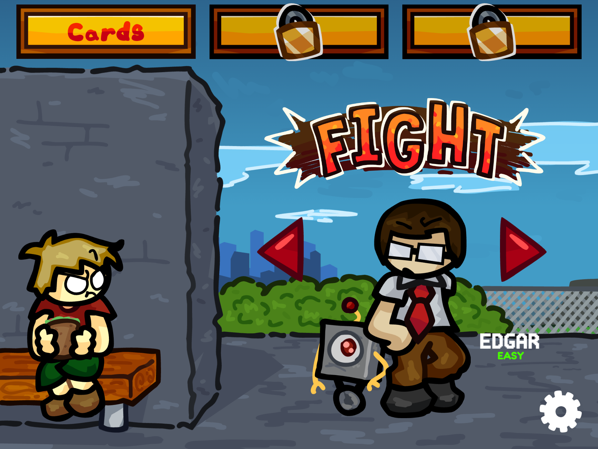

Devlog 26.7.1
July 6th, 2026
Lead the School is back with a fresh new look and mindset!
This remake moves away from Scratch and relies on Turbowarp, giving me much more flexibility with its extension blocks. Along with the slight engine upgrade, I've added a variety of new features that bring together the best parts of both the original game and its sequel into one complete experience.
Some of those things that I've added include, but aren't limited to...
I can't share everything I plan to add right away, but I will mention the obvious...
I want this game to be more than what it's worth right now, and I want to be able to build something off of a game that really helped shape where I am today. If you don't know from Lead the Friday Night, Lead the School was a stupid little Scratch game made by someone who liked making Henry Stickmin fangames (hence why I made Cracking the Safe as well). It's kinda stupid how many of my projects right now are centred around the same person. But if it weren't for BioPlant, I wouldn't be where I'm at today, so I gotta give my specialest of thanks.
Thank you for taking the time to read my devlog, and make sure to check out my other work!
-Neon